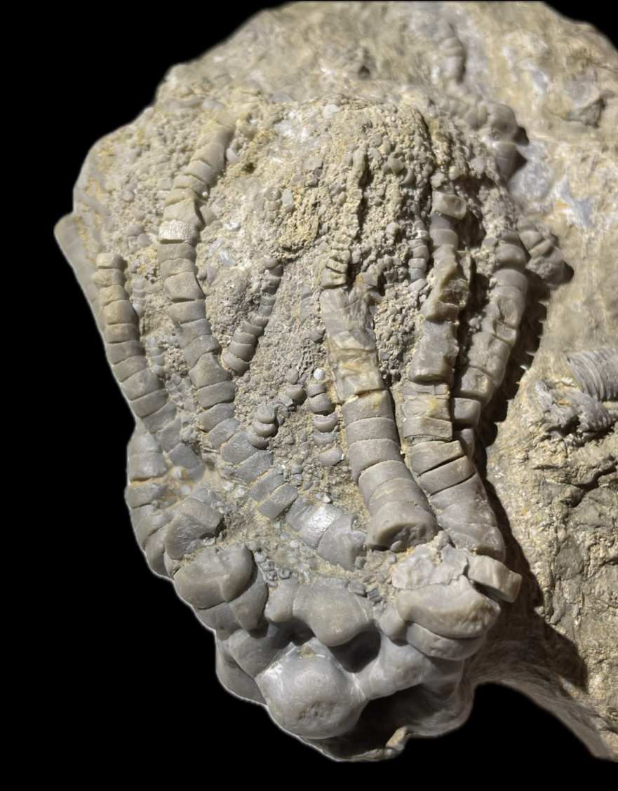
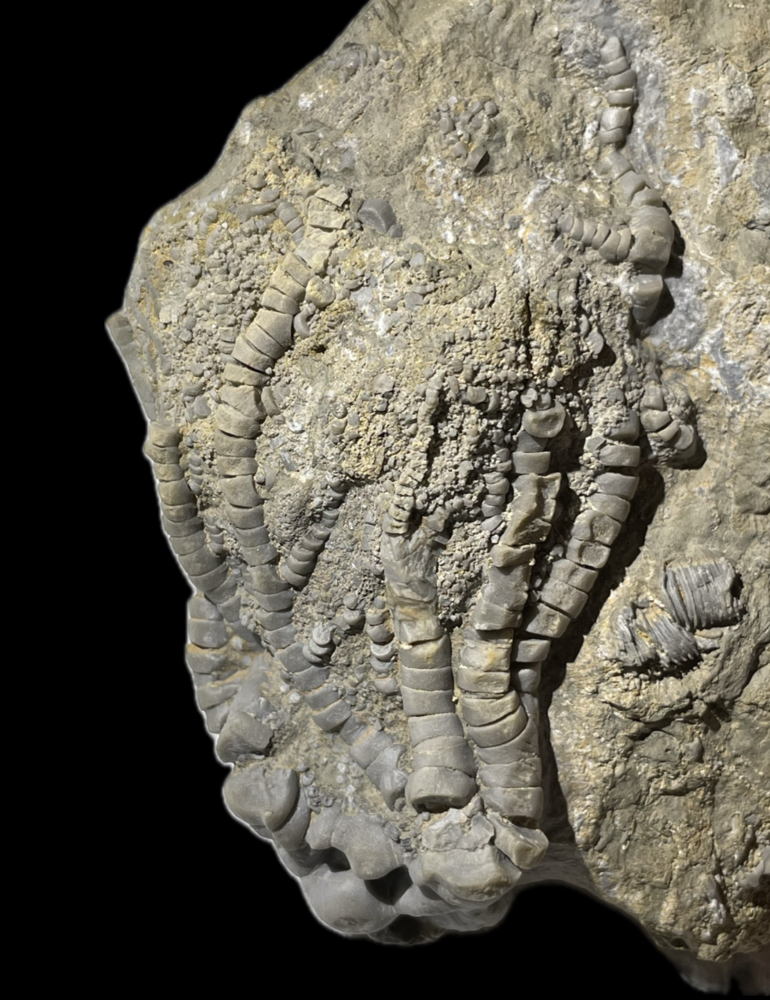
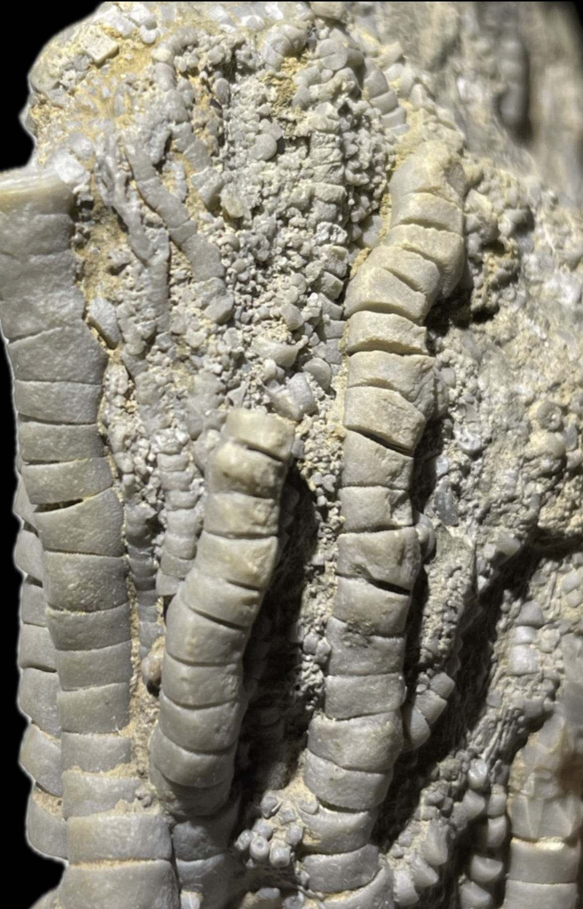

Crinoid
Size: 8.5 cm crown
This is a highly unusual crinoid from the Devonian of Spain. It closely resembles Costalocrinus ibericus from slightly younger Emsian strata of Spain, but lacks the enlarged anal X which articulates with the proximal brachials of the C and D rays. C. ibericus in turn closely resembles the prolific Mississippian genus Barycrinus rhombiferous in its wide, uniserial nonpinnulate arms, but is distinguished by the aforementioned enlarged anal X (which also defines the genus), in addition to strong, rib-like calyx ornamentation. Due to the resemblance, C. ibericus is presumed to be close to the ancestral split between Costalocrinus and Barycrinus (Kammer 2001). This specimen, which lacks the defining feature of the genus Costalocrinus which also chiefly distinguishes C. ibericus from B. rhombiferous, appears to be even more close to Barycrinus and seems to have questionable generic assignment. According to George McIntosh, this crinoid may represent a new genus and/or a transitional form. |
 |
|---|
Copyright © 2025 by Samuel Kim, all rights reserved